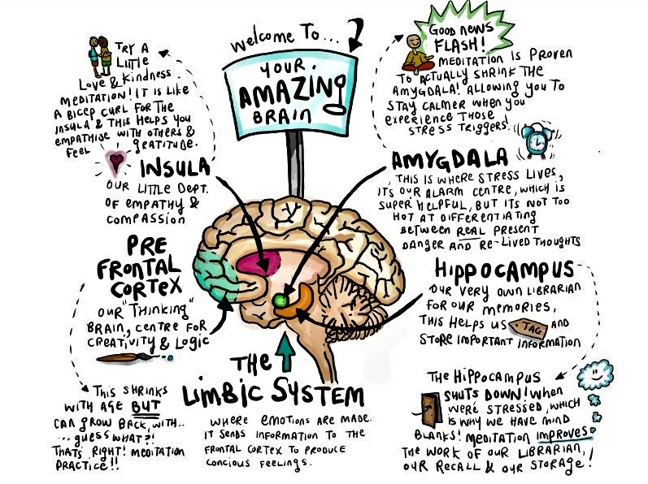
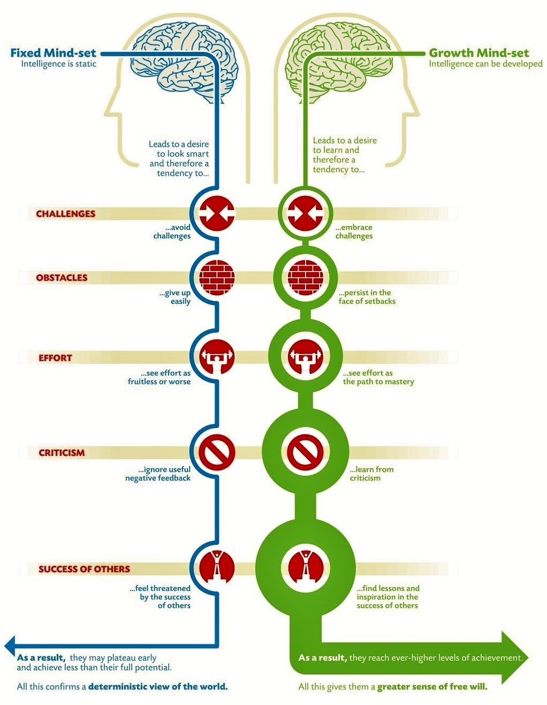

mind vs. brain
How has neuroplasticity influenced my learning?
I never really understood my brain until I learnt about Neuroplasticity. I am not sure if I am the only one. I never questioned exactly why, learning about some topics I understand quickly, but then some, no matter how much time I pour into understanding it, I still didn't get it.
Neuroplasticity is the term referring to the brain's ability to modify, change structure, and function from experiences gained throughout one's life. There are multiple techniques to build stronger hardier neural networks. Some common practices for strengthening connections are; constantly repeating a task, reading, sleeping, and even dancing!
Learning about neuroplasticity, I now understand that everyone's brains are wired uniquely. No one will have the same wiring since no two people undergo the same experiences in the same way. Each person builds different connections for every experience, they experience. The more time we spend thinking about
fixed vs. growth
Travelling from a dark past to a now glowing future
This concept is super new to me.
